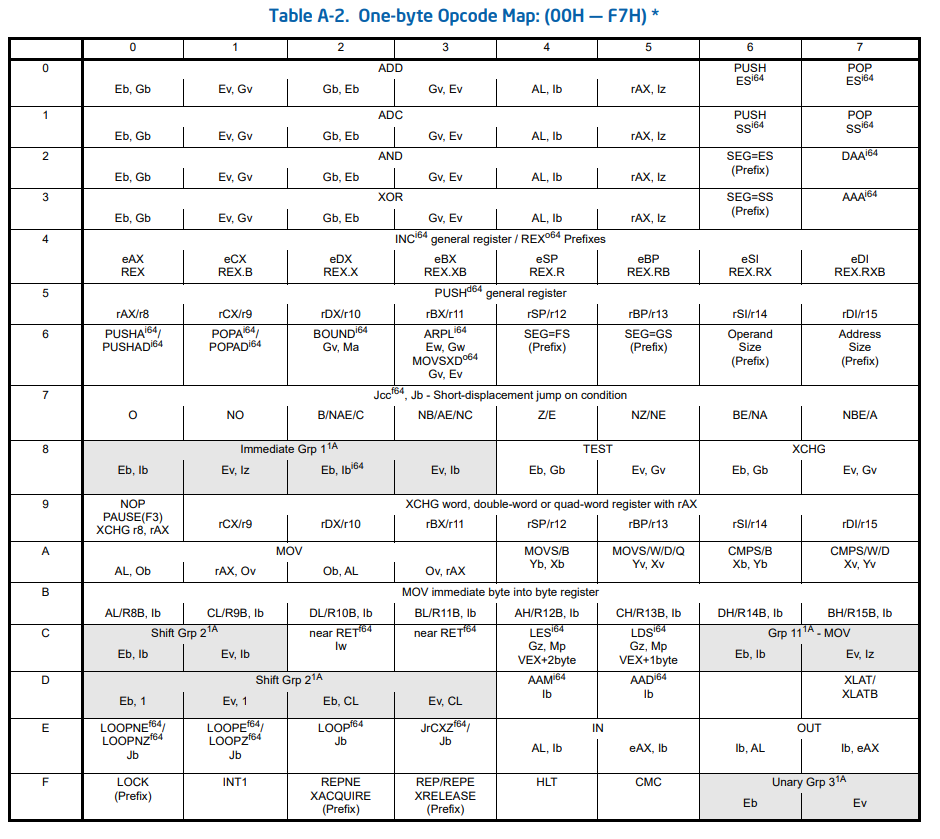

Assembly Debugging
어셈블리어 어셈블리 언어 디버깅 방법
먼저 학습목적으로는 64비트보다는 32비트 운영체제에서 학습 권장 실무는 당연히 64비트겠지만
F5 디버깅 시작 F9 브레이크포인트 설정 F10 현재 한 줄 실행, 다음 줄로 F11 함수 내부로 진입
호출스택 단축키 Ctrl Alt C
조사식 단축키 Ctrl Alt W
x86 아키텍쳐 지정된 목적의 레지스터 (CPU 내부 값) esp Stack Pointer Register ebp Base Pointer Register
어셈블리어 단위 디버그 F9 브레이크포인트 설정 F5 디버깅 실행 디스어셈블리 디버깅 모드 실행 Ctrl Alt D 디버그 > 창 > 디스어셈블리 보기 옵션 코드 바이트 표시 주소 표시 소스코드 표시 기호이름 표시 줄 번호 표시
조사식 창 단축키 Ctrl Alt W 디버그 > 창 > 조사식 내부에 ebp esp ecx 등 레지스터 검색도 가능 우클릭 후 16진수 표시 누르면 16진법으로 표기됨
호출 스택 창 단축키 Ctrl Alt C 디버그 > 창 > 호출 스택 우클릭 후 외부 코드 표시 누르면 main 함수 밖의 함수도 나옴
메모리 창 디버그 > 창 > 메모리 열: 4열 추천, 16진수 4개 즉 메모리 4바이트 32비트씩 확인 가능 내부 값 변경 가능, 메모리 내부 값 직접 접근 후 변경 가능
레지스터 창
디버그 > 창 > 레지스터 32비트 기준 EAX EBX ECX EDX ESI EDI EIP ESP EBP EFL 다 확인 가능
어셈블리어 에서 기계어 변환 과정에서, push (Register Name) 형식의 어셈블리어는 1바이트짜리 기계어로 변환이 되는 것을 확인했습니다. 예시로는
이를 통하여 Intel Opcode 를 검색해 보았고, 특정 자주 사용되는 레지스터 값 스택 메모리에 push 하는 경우 경우 1바이트만에 처리할 수 있게 해 주는 opcode의 존재 확인
어셈블리 코드 분석
여기서는 14 X 16 + 8 = 232 만큼의 공간 확보사실 변수도 없는 것, 스택은 메모리 공간을 확보하고 변수는 그냥 스택 메모리 공간으로 고려함 여기서, CPU 레지스터 관점과 RAM 메모리 관점을 다르게 할 필요가 있음
스택과 CPU 상황
스택 상황과 레지스터 상황을 동시에 고려해야 함
push ebp // 스택 업데이트 스택에 ebp의 값을 밀어넣음 ebp 는 main 함수의 base pointer, main 함수의 스택 프레임 최상단 시작점이라고 볼 수 있음 즉 main base pointer를 스택에 집어넣기
mov ebp, esp 레지스터 값 ebp = esp로 설정 sub esp, 0E4H 레지스터 값 esp -= 0E4h로 설정 push ebx push esi push edi 스택에 ebx esi edi 레지스터 값을 밀어넣는 이유는 해당 함수의 호출 프레임이 종료되고 상위 함수의 호출 스택으로 돌아갈 때 백업 때문 하지만 이게 과연 필요한가는 의문 아무튼 현재 스레드 스택은 이러면 [Higher Address ] [prev stack frame] [main ebp address] [main ebx address] [main esi address] [main edi address] [216 Byte Area ] [Lower Address ] 을 최하단에 저장하고 있을 것.
즉
000719C0 55 push ebp
000719C1 8B EC mov ebp,esp
000719C3 81 EC D8 00 00 00 sub esp,0D8h
000719C9 53 push ebx
000719CA 56 push esi
000719CB 57 push edi
0007181C 8D 7D D8 lea edi,[ebp-28h]
0007181F B9 0A 00 00 00 mov ecx,0Ah
00071824 B8 CC CC CC CC mov eax,0CCCCCCCCh
00071829 F3 AB rep stos dword ptr es:[edi]
mov ecx, 0Ah 이거는 ecx Counter 레지스터 값을 10으로 설정, 반복 횟수로 사용될 예정 mov eax, 0CCCCCCCCh 이거는 eax Accumulator 레지스터 값을 초기화하는 것
rep stos dword ptr es:[edi]
stos 는 StoreString 약자, stos의 실제 동작은
- eax 값을 [edi] 위치에 저장
- edi 값을 증가시킴, df 플래그에 따라 +4 또는 -4
- ecx 를 1 감소
방향성 일만적으로 DF (Direction Flag) = 0 이므르 edi는 증가한다 edi는
\(ebp - 40 \rightarrow ebp - 36 \rightarrow ebp - 32 \rightarrow \dots \rightarrow ebp-4\) 방향으로 이동
- edi Destination Index 위치에 eax 값 (0xCCCCCCCC) 4바이트 DWORD 를 저장 후 다음 DWORD 위치로 이동
- edi += 4 바이트, 다음 DWORD 위치로 이동
- ecx-- 0Ah 10으로 시작했던 Counter Register 감소
- ecx != 0 일 경우 (1)번으로 돌아가서 반복
결론적으로 ebp-40부터 ebp-4까지 모든 메모리가 0xCCCCCCCC 값으로 초기화 여기서 es는 과거 Segment Register, 16비트 컴퓨터 시대에 포인터 20비트 쓰고 싶어서 만든 공간 무시가능
0007182B A1 00 A0 07 00 mov eax,dword ptr [__security_cookie (07A000h)]
00071830 33 C5 xor eax,ebp
00071832 89 45 FC mov dword ptr [ebp-4],eax
00071835 B9 28 C0 07 00 mov ecx,offset _12BD23D1_tmain@cpp (07C028h)
0007183A E8 F5 FA FF FF call @__CheckForDebuggerJustMyCode@4 (071334h)
0007183F 90 nop
조사식에서
ebp, x 이러면 16진법 ebp, b 이러면 2진법 이렇게 ebp, d 이러면 10진법 아니면 그냥 ebp 도 10진법 ebp, o 8진법
a b c d 앞에 역참조 &a 이러면 주소 나옴